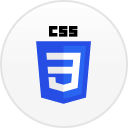

üëãüèΩ Hello, I‚Äôm Vinod.
 Graphite
Graphite
During the early days of working out a strategy for developing a design system at Careem, we got the entire team together in a room once a week for an hour. We started by discussing the problems we dealt with as designers at Careem. It was apparent that we needed to find ways to deliver a consistent user experience and establish visual consistency across different verticals. Better collaboration and shared resources were vital.
An idea to build an icon organiser/browser was born during one of these team workshop sessions. Some of us used Iconjar, and the others preferred using icons as shared assets within Figma. Searching through 30k icons within Figma wasn't an ideal experience at the time (we used streamline icons) . The meticulously crafted tags that came out of the box with streamline icon-set didn't work within Figma. Tags only worked for Iconjar users. The bigger problem was to maintain a single source of truth that everyone had access to, the designers and eventually the development teams.
When I did the initial round of research, I came across how someone built a fantastic tool closer to what we needed.
Our reasons align with the article above, tagging icons was not our use-case. We already had them tagged out of the box. Also, this tool was built for Microsoft's internal use and was not available for us. We needed to build our own.
So I started with a poll on slack. I asked the team to choose between a menu bar application, web or a desktop app, the three possible forms of how this application could work. Most people in the team seemed to want a desktop application, and they had their reasons that convinced me.
The audience included product designers, marketing designers, developers, and product managers, which meant that this application had to work on macOS, Windows and Linux. Electron was an obvious choice. Also, I always wanted to try it out. The point of side projects is to learn something new through experiments.
Even though it is very tempting to write a step by step tutorial of how I went about building Graphite, it is out of this case study's context. But here is an outline of my process and I'll spare you the majority of technical details for brevity.
First, I needed to figure out a way to extract the tags from the Iconjar file that came with the streamline icon set. Simply de-compressing the file using zlib seemed to do the trick.
The de-compressed file now contains a folder of icons and a JSON file with all the tags associated with them. All I needed to do is to manipulate the JSON file using JQ to create a new data structure that I would use within Graphite.
Apart from the "click to copy SVG to clipboard" part, everything else is pretty straight forward in terms of markup. Graphite displays all the icons within the viewport and loads more of them progressively when they scroll up to the viewport. Supports a simple filter function to filter through the icons based on a search query. Whipped up a name and an app icon and that's all, version one of Graphite was ready after a week or so.
I owe big time to the design team at Careem, who were so supportive in initiatives such as this one. I plan to expand on this idea at some point in time. For now, it's in the back burner.
- Tools
-
Figma
Best UI design tool yet. Real-time collaboration with design, product and development. -
Sketch
First UI design tool I ever loved. I still use it to do that odd job that Figma cannot handle. -
HTML
Bread and butter of the internet. -

CSS
CSS powers the style and character of the internet. Thanks, Eric Meyer. -

Javascript
Programming language of the web that everyone loves to hate. Not me. -

Electron
Make platform agnostic desktop apps with HTML, CSS & JS. -
Sublime
Tried atom and all, But this one takes the cake. Best IDE there is. -
Codekit
Cannot think of web development without this nifty little tool. -

Github
Version code and collaborate with developers. Also, Github Pages.
Check out more of my work —


I’m looking to find a full-time product design role in Berlin. Have you got any? Perfect. Lets get in touch -- vinod@brutallyminimal.com